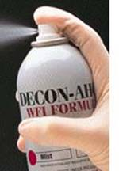

| Sterile Chemical Manufacturing | |||||||||
|  |
DECON-AHOL Sterile WFI Formula has been developed to address the reduction of possible endotoxin levels that may exist in the use of a 70% sterile Isopropyl alcohol solution. VAI knew that just formulating 99% isopropyl alcohol with USP Water for Injection (WFI) without the concern for the reduction of endotoxin levels throughout the entire manufacturing process would net an unacceptable final product. Therefore, after years of development VAI has assured not only the formulation of the product with USP Water for Injection but also designed a system to assure a closed system manufacturer of the product. VAI has assured the lowest possible endotoxin level making it an excellent choice for the critical Class 1000 aseptic manufacturing operation. DECON-AHOL WFI Formula is:
Uses: DECON-AHOL WFI Sterile Formula is used for the decontamination of items such as:
|
||||||||